Weathered small-town architecture in seconds: shops, shacks, farmhouses and warehouses, from freshly painted to falling apart. Drag a preset in, move a few sliders, render.
Weathering drives dirt, rain streaks, peeling paint, rust, chalky fading, broken and boarded windows and sagging awnings, so every building gets its own character. Drag the handle.
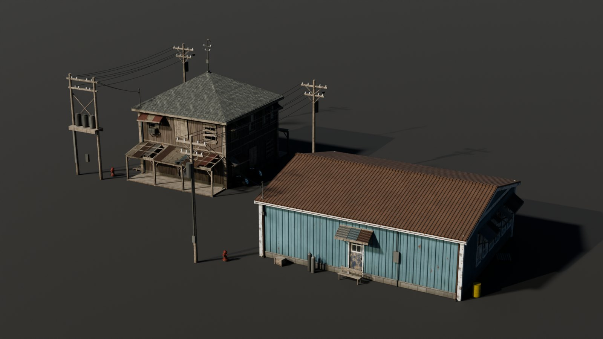
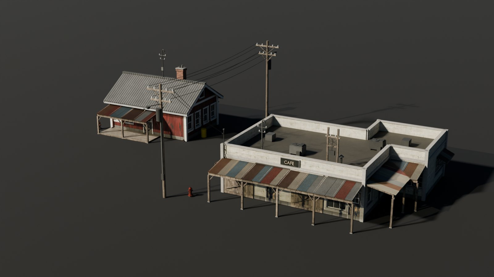
Kept-upAbandonedAll renders straight out of Blender (Cycles) with the included studio, day and night setups.
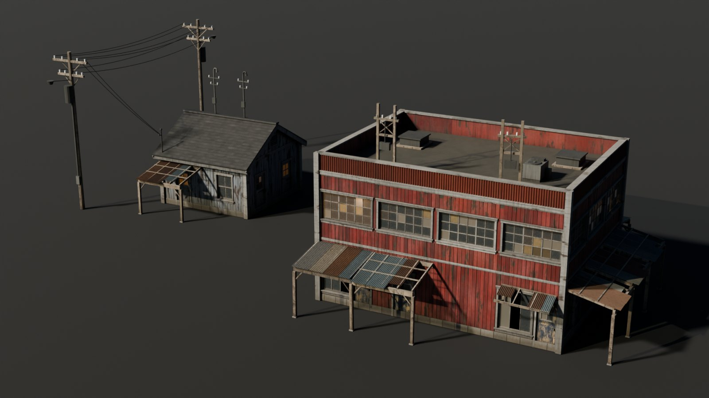
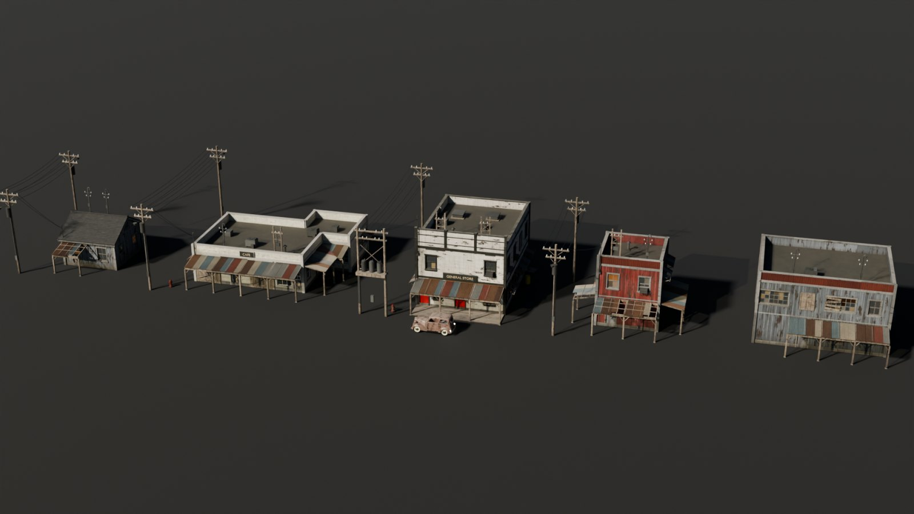
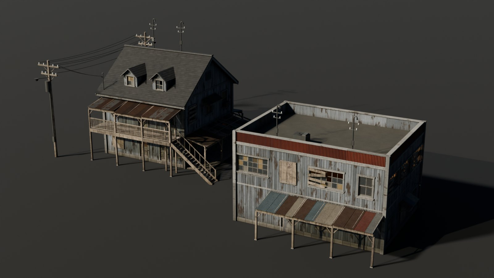
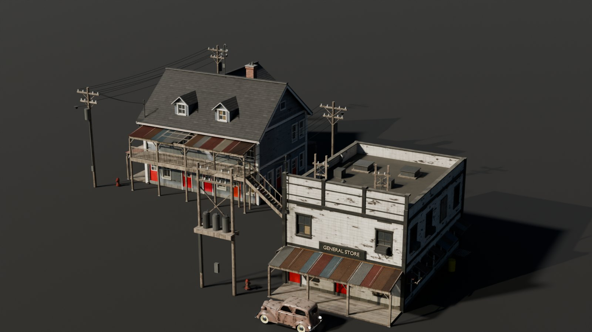
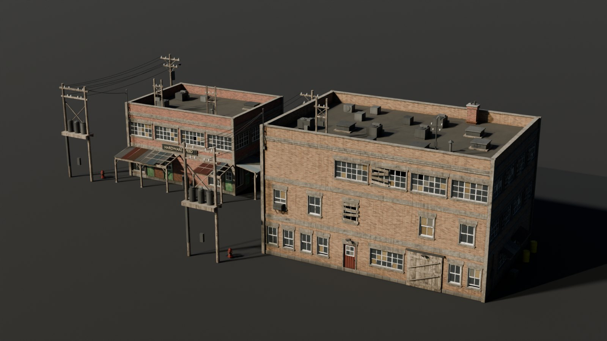
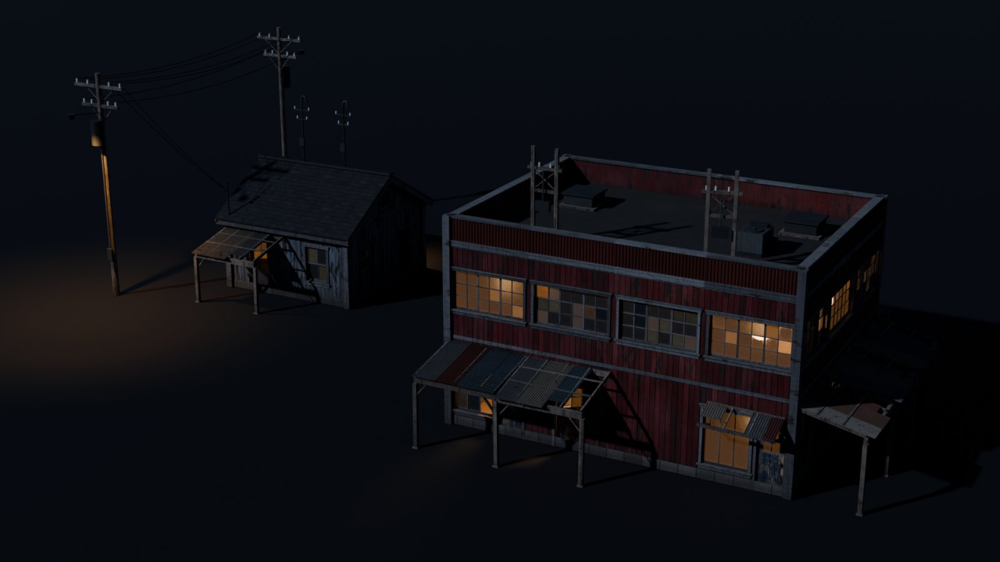
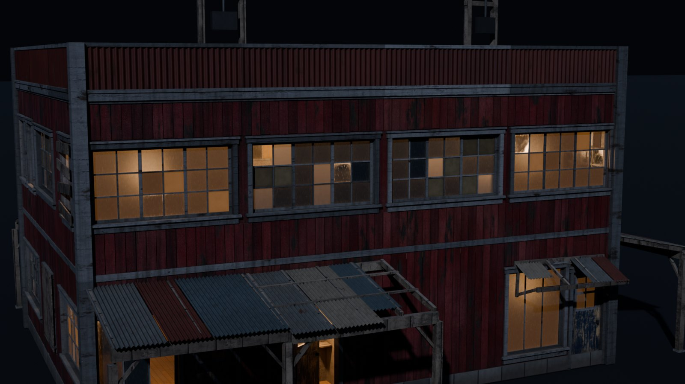
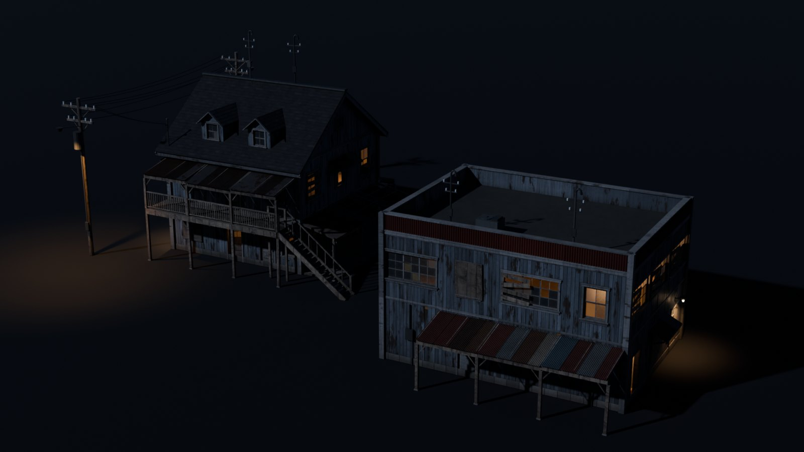
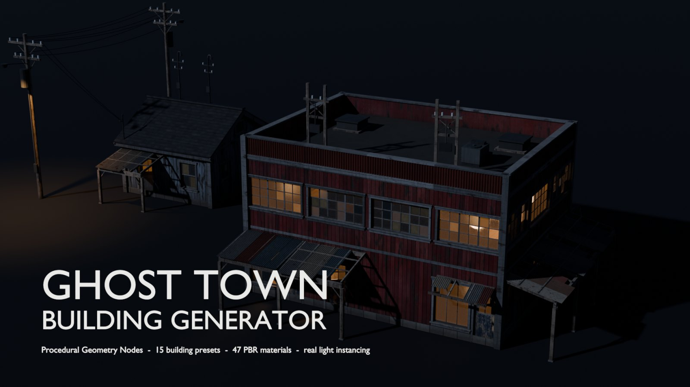
One Geometry Nodes modifier builds the whole lot. Nothing is destructive; Realize turns it into plain geometry for export.
Bays, floors, floor height and two extra wings for L, T and U plans. Random Layout gives a new building on every seed.
Flat with parapets or false fronts, gable and hip roofs with dormers, chimneys, gutters, rooftop units and weatherhead masts.
Board & batten, clapboard, brick or plain; doors, shopfronts, windows, ribbon windows and warehouse doors by weight.
Dirt, rain streaks, peeling paint, rust and fading follow one slider; Imperfections shift and drop planks and lean the posts.
Room lights behind lit windows, porch lamps, the street lamp and lit halls behind open doors come with the building.
Corrugated awnings sheet by sheet, porch decks, balconies with stairs, signs with 3D lettering, window AC units, meters, lamps.
Single and H-frame utility poles with transformers, power lines beside the building and a service drop to the wall.
Bricks, stone and sheet metal are procedural; image textures are broken up with offset samples and multi-scale noise.
Each preset is a fully editable starting point in the Asset Browser.
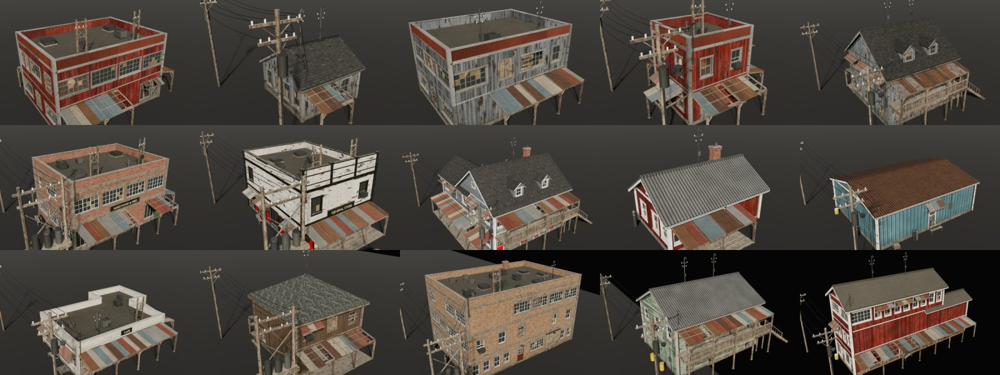
Painted boards, siding, brick, plaster, stone, corrugated and galvanised sheet, roofing, trims, doors, wood and metal — drop any of them on the modifier's slots.
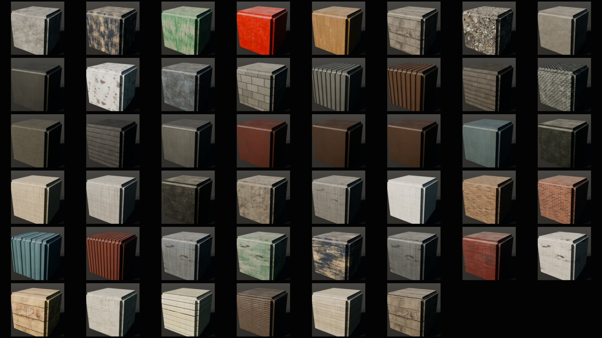